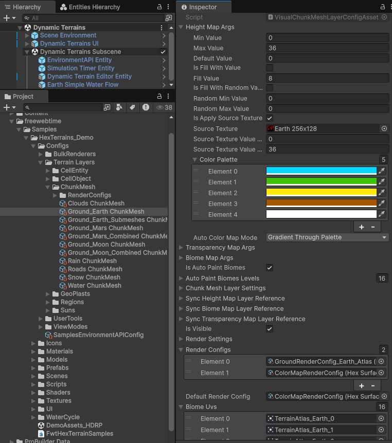

ChunkMeshLayerConfigAsset

ChunkMeshLayerConfigAsset is a Unity ScriptableObject used as both:
- A terrain-layer factory (it implements
ITerrainLayerFactoryviaHexTerrainLayerConfigAsset<T>), and - A layer initialization/config payload (it implements
IChunkMeshLayerConfig).
It configures how a ChunkMeshLayer (and derived layers) initialize their internal data layers:
- height per cell (
HeightMap) - biome per cell (
BiomeMap) - transparency per cell (
TransparencyMap) - optional auto-biome painting from height
- optional data syncing from other layers
- optional overlap/transparency rules
Where/how this config is used during terrain initialization
Terrain layers are commonly hosted inside a HexTerrainLayerGroup<TTerrainLayer>. During initialization, the group:
- iterates the provided init-args list (often a list of config assets),
- creates the runtime layer instance using
ITerrainLayerFactory(if implemented), - then calls
layer.Init(settings, initArgs)to apply the config.
Key implementation detail:
HexTerrainLayerGroup<TTerrainLayer>.CreateTerrainLayer(initArgs):- if
initArgs is ITerrainLayerFactory, it callsfactory.CreateTerrainLayer<TTerrainLayer>() - otherwise it uses
Activator.CreateInstance<TTerrainLayer>()
- if
ChunkMeshLayer.Init(settings, initArgs):- checks
initArgs is IChunkMeshLayerConfig - copies settings/references
- initializes height/biome/transparency maps from the provided init args
- optionally auto-paints biomes based on height thresholds
- checks
flowchart TD
A["Scene/Bootstrap code provides a list of layer config assets"] --> B["HexTerrainLayerGroup<T>.Init(settings, initArgsList)"]
B --> C["For each initArgs: CreateTerrainLayer(initArgs)"]
C --> D["If initArgs implements ITerrainLayerFactory: call CreateTerrainLayer() on the asset"]
D --> E["layer.Init(settings, initArgs)"]
E --> F["ChunkMeshLayer.Init<T> reads IChunkMeshLayerConfig and initializes maps"]
E --> G["VisualChunkMeshLayer.Init<T> (if applicable) copies render/UV settings"]
E --> H["Roads/Rain/Clouds layers copy their specialized settings (if applicable)"]
Field reference: ChunkMeshLayerConfigAsset
Source:
com.freewebtime.hexterrains/Runtime/ChunkMeshes/Data/ChunkMeshLayerConfigAsset.cs
Height Map Args (_heightMapArgs / HeightMapArgs)
Type: InitColorMapCellValueDataLayerArgs<float>
Controls initialization of the layer’s per-cell height data (ChunkMeshLayer.HeightMap).
How it’s used:
ChunkMeshLayer.Init<T>callsInitColoredDataLayer(HeightMap, config.HeightMapArgs)- This can fill with a constant, random range, or apply a source texture.
- Also configures color palette + auto-color mode for the height color map (if used).
Typical meaning:
- This is the base “terrain elevation” for this layer (or any per-cell scalar the layer interprets as height).
Transparency Map Args (_transparencyMapArgs / TransparencyMapArgs)
Type: InitColorMapCellValueDataLayerArgs<bool>
Controls initialization of the per-cell transparency flags (ChunkMeshLayer.TransparencyMap).
How it’s used:
ChunkMeshLayer.Init<T>callsInitDataLayer(TransparencyMap, config.TransparencyMapArgs)- Can fill all transparent/opaque, randomize (bool), or derive from a texture (depending on implementation support).
Typical meaning:
- Marks cells that should be treated as transparent/hidden in rendering or downstream calculations.
- This is also used when calculating “dirty mesh sources” (mesh regeneration triggers).
Biome Map Args (_biomeMapArgs / BiomeMapArgs)
Type: InitColorMapCellValueDataLayerArgs<int>
Controls initialization of per-cell biome indices (ChunkMeshLayer.BiomeMap).
How it’s used:
ChunkMeshLayer.Init<T>callsInitColoredDataLayer(BiomeMap, config.BiomeMapArgs)- Biome values typically map to:
- submesh/material index (standard rendering), or
- atlas UV selection (when
RenderSettings.IsUseBiomeAtlasis enabled in visual layers)
Is Auto Paint Biomes (_isAutoPaintBiomes / IsAutoPaintBiomes)
Type: bool
If enabled, the biome map is overwritten (painted) from the height map using AutoPaintBiomesLevels.
How it’s used:
- In
ChunkMeshLayer.Init<T>:- if
config.IsAutoPaintBiomes, calls:FillBiomeByHeight(BiomeMap.Data, HeightMap.Data, config.AutoPaintBiomesLevels)
- then marks the whole biome map dirty.
- if
Implications:
- Any biome values produced by
BiomeMapArgscan be replaced by this step.
Auto Paint Biomes Levels (_autoPaintBiomesLevels / AutoPaintBiomesLevels)
Type: List<float>
A list of height thresholds used to assign biome indices.
Algorithm (as implemented):
- For each cell height
h, find the highest indexisuch thatlevels[i] <= h - Assign
biome = i - If the list is null/empty, biome defaults to
0
Practical guidance:
- Index in the list is the biome index that will be assigned.
- Example (levels
[0, 1, 2]):h < 1→ biome01 <= h < 2→ biome1h >= 2→ biome2
Chunk Mesh Layer Settings (_chunkMeshLayerSettings / ChunkMeshLayerSettings)
Type: ChunkMeshLayerSettings
Controls layer-specific rules used primarily during cell-metrics and color-map calculation:
UseHeightTresholdForTransparency
If true, cell metrics calculation uses a height threshold to treat cells as transparent (see CalcHexCellMetricsJob usage).
HeightTresholdForTransparency
Height cutoff used when UseHeightTresholdForTransparency is enabled.
HasOverlappingLayer
If true, biome color map calculation can be influenced by an overlapping layer.
OverlappingLayerReference
A HexTerrainLayerReference to another ChunkMeshLayer. When overlapping is enabled, biome color calculation can mark cells transparent if they are lower than the overlapping layer at the same cell index.
Where it shows up:
ChunkMeshLayer.CalculateBiomeColorMap()chooses overlap-aware logic when enabled.
Sync Height Map Layer Reference (_syncHeightMapLayerReference / SyncHeightMapLayerReference)
Type: HexTerrainLayerReference
If set, this layer can copy (sync) height values from another ChunkMeshLayer during runtime syncing.
Where it’s used:
ChunkMeshLayer.SyncHeightMap()
Behavior summary:
- Finds referenced layer in
ParentLayerviaHexTerrainLayerReference - If either source or target map is dirty, schedules a sync job and marks target dirty.
Sync Biome Map Layer Reference (_syncBiomeMapLayerReference / SyncBiomeMapLayerReference)
Type: HexTerrainLayerReference
Same concept as height syncing, but for biome values.
Where it’s used:
ChunkMeshLayer.SyncBiomeMap()
Sync Transparency Map Layer Reference (_syncTransparencyMapLayerReference / SyncTransparencyMapLayerReference)
Type: HexTerrainLayerReference
Same concept as height syncing, but for transparency flags.
Where it’s used:
ChunkMeshLayer.SyncTransparencyMap()
CreateTerrainLayer()
Factory method override (important for initialization flow).
Default mapping:
ChunkMeshLayerConfigAsset.CreateTerrainLayer()→new ChunkMeshLayer()
This is what enables HexTerrainLayerGroup<T>.CreateTerrainLayer(initArgs) to instantiate the correct runtime layer type when the init-args object is a config asset.
Shared nested type: InitColorMapCellValueDataLayerArgs<TValue>
These args appear in the inspector as foldouts for HeightMapArgs, BiomeMapArgs, and TransparencyMapArgs.
Value range / defaults
MinValue: used for some calculations (not a hard clamp)MaxValue: used for some calculations (not a hard clamp)DefaultValue: used when layers resize and new cells are added
Initialization mode toggles (usually you enable one)
IsFillWithValue+FillValueIsFillWithRandomValues+RandomMinValue+RandomMaxValueIsApplySourceTexture+SourceTexture+SourceTextureValueOffset+SourceTextureValueScale
Color map configuration (for colored layers)
ColorPalette: palette used to compute a color mapAutoColorMapMode:GradientThroughPalette: value normalized betweenMinValue..MaxValuedrives palette gradientColorIndexByValue: integer value used as palette indexCustom: derived/custom logic
Shared nested type: HexTerrainLayerReference
A generic way to reference another layer in the same HexTerrainLayerGroup:
IsSearchByIndex+LayerIndexIsSearchByName+LayerName
Used by:
- sync references (
SyncHeightMapLayerReference, etc.) - overlap reference (
ChunkMeshLayerSettings.OverlappingLayerReference)
Inherited config assets (derived from ChunkMeshLayerConfigAsset)
VisualChunkMeshLayerConfigAsset
Base class for renderable chunk mesh layers.
Factory mapping:
VisualChunkMeshLayerConfigAsset.CreateTerrainLayer()→new VisualChunkMeshLayer()
Additional fields:
Is Visible (_isVisible / IsVisible)
If false, the layer will skip mesh generation/rendering (VisualChunkMeshLayer.CalcMeshSources returns early).
Render Settings (_renderSettings / RenderSettings)
Type: ChunkMeshRenderSettings
Key sub-fields:
HeightOffset: vertical render offset (commonly used for water)IsColoredBorders,BorderSubmeshIndex,ColoredSlopeTreshold,BorderSize: border rendering rulesIsUseBiomeAtlas: if true, biome selection uses atlas UVs instead of biome-index materialsUVScale: global UV scalingIsOverrideSlopeSize/OverrideSlopeSize: optional slope size override during mesh generation
Where it’s used:
- Copied into
VisualChunkMeshLayer.RenderSettingsduringInit<T>. - Affects mesh generation jobs (
GenerateSurfaceChunkMeshJob, etc.).
Render Configs (_renderConfigs / RenderConfigs)
Type: List<HexSurfaceRenderConfigAsset>
Meaning:
- Index is the terrain “view mode” (viewMode 0 → config 0, etc.)
- Each config provides:
Materials[](material index typically = biome/submesh index)- shadow flags
Default Render Config (_defaultRenderConfig / DefaultRenderConfig)
Fallback if the requested view mode has no entry in RenderConfigs.
Biome UVs (_biomeUvs / BiomeUvs)
Type: List<Sprite>
Used to generate ChunkMeshBiomeUVConfig entries:
- Each sprite’s UV rect is extracted and stored.
- Only used when
RenderSettings.IsUseBiomeAtlasis enabled (atlas workflow).
WaterChunkMeshLayerConfigAsset
Factory mapping:
WaterChunkMeshLayerConfigAsset.CreateTerrainLayer()→new WaterChunkMeshLayer()
Adds no new serialized fields beyond VisualChunkMeshLayerConfigAsset.
Practical notes:
- Usually configured with a small
RenderSettings.HeightOffsetto prevent z-fighting with the ground surface. - Uses a specialized mesh generator job (
GenerateWaterChunkMeshJob) inWaterChunkMeshLayer.
RoadsChunkMeshLayerConfigAsset
Factory mapping:
RoadsChunkMeshLayerConfigAsset.CreateTerrainLayer()→new RoadsChunkMeshLayer()
Adds:
Roads Render Settings (_roadsRenderSettings / RoadsRenderSettings)
Type: HexRoadsRenderSettings
Fields:
RoadThickness: relative to hex radius (0..1)RoadsTileScalePlato: UV tiling for flat road segmentsRoadsTileScaleBridge: UV tiling for “bridge” segmentsCrossRoadsUvScale: UV scaling for cell-center crossroadsIsUseHeightTreshold: only render road connections if neighbor height delta is small enoughHeightTreshold: the allowed height delta
Where it’s used:
- Copied into
RoadsChunkMeshLayer.RoadsRenderSettingsduring init. - Passed into
GenerateRoadsChunkMeshJob.
CloudsChunkMeshLayerConfigAsset
Factory mapping:
CloudsChunkMeshLayerConfigAsset.CreateTerrainLayer()→new CloudsChunkMeshLayer()
Adds:
Clouds Render Settings (_cloudsRenderSettings / CloudsRenderSettings)
Type: CloudsRenderSettings
Fields:
CloudThickness: max volumetric thickness at/aboveMaxCellHeightMaxCellHeight: height at which thickness is considered maxCloudScaleTreshold: below this height, cloud scale fades toward 0IsDrawBottomSide: whether underside faces are generated/rendered
Where it’s used:
- Copied into
CloudsChunkMeshLayer.CloudsRenderSettingsduring init. - Passed into
GenerateCloudsChunkMeshJob.
RainChunkMeshLayerConfigAsset
Factory mapping:
RainChunkMeshLayerConfigAsset.CreateTerrainLayer()→new RainChunkMeshLayer()
Adds:
Rain Render Settings (_rainRenderSettings / RainRenderSettings)
Type: RainRenderSettings
Fields:
RainHeight: vertical start height above terrain from which rain is generatedMaxCellHeight: terrain height at which rain effect reaches its max (visual scaling is typically interpolated)
Where it’s used:
- Copied into
RainChunkMeshLayer.RainRenderSettingsduring init. - Passed into
GenerateRainChunkMeshJob.
Summary: runtime layer created by each config asset
| Config asset | Runtime layer instance returned by CreateTerrainLayer() |
|---|---|
ChunkMeshLayerConfigAsset |
ChunkMeshLayer |
VisualChunkMeshLayerConfigAsset |
VisualChunkMeshLayer |
WaterChunkMeshLayerConfigAsset |
WaterChunkMeshLayer |
RoadsChunkMeshLayerConfigAsset |
RoadsChunkMeshLayer |
CloudsChunkMeshLayerConfigAsset |
CloudsChunkMeshLayer |
RainChunkMeshLayerConfigAsset |
RainChunkMeshLayer |